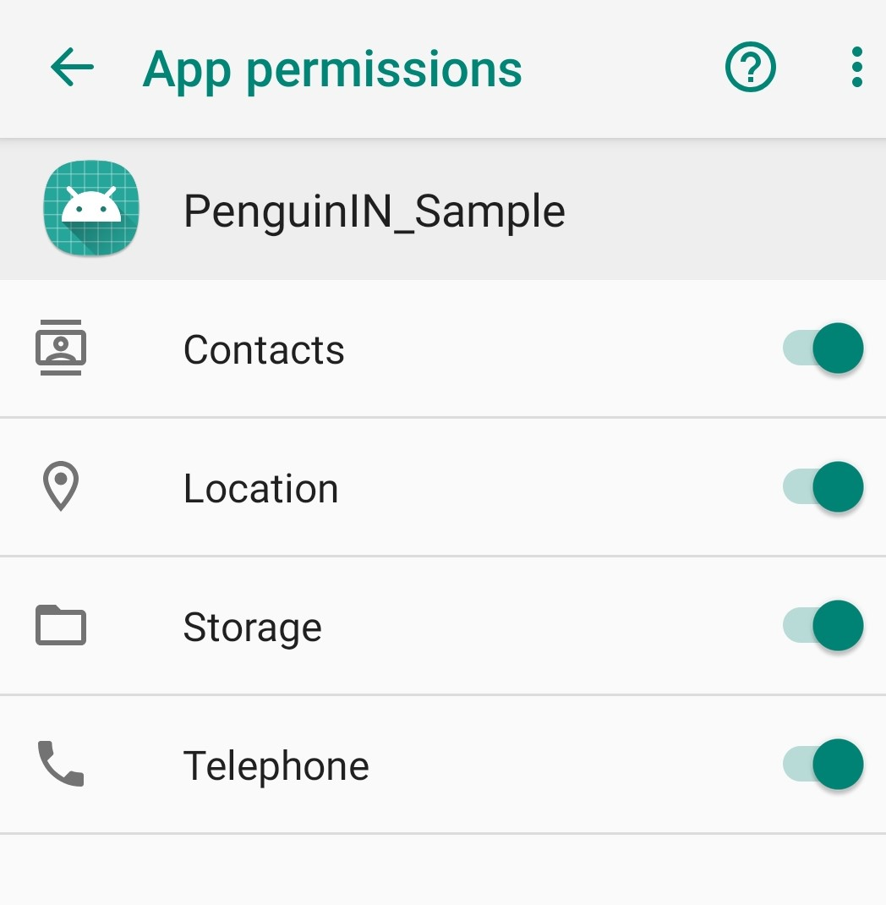
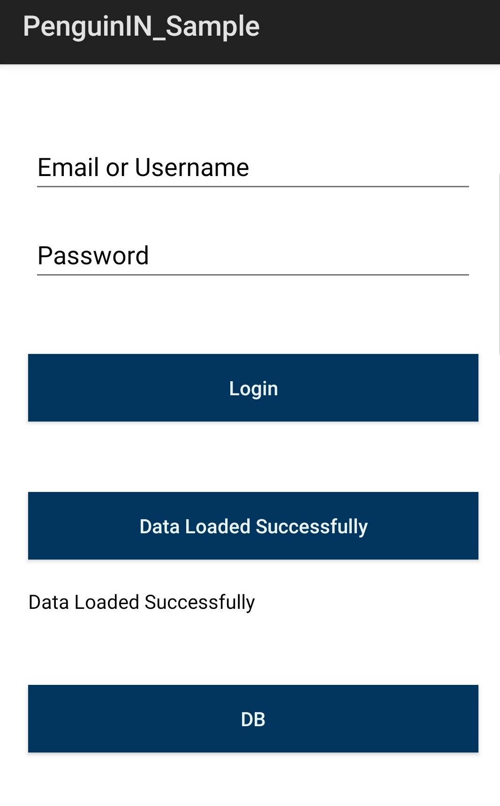
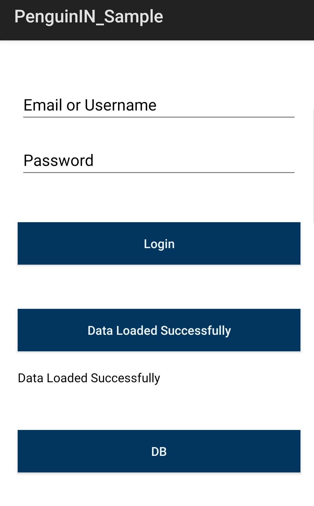
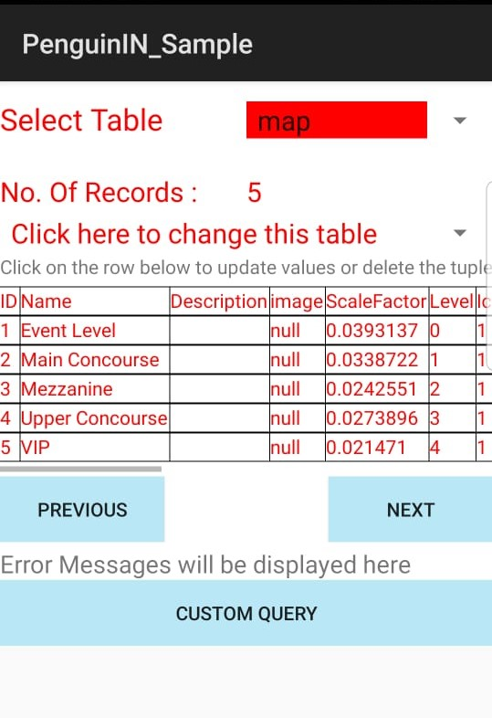
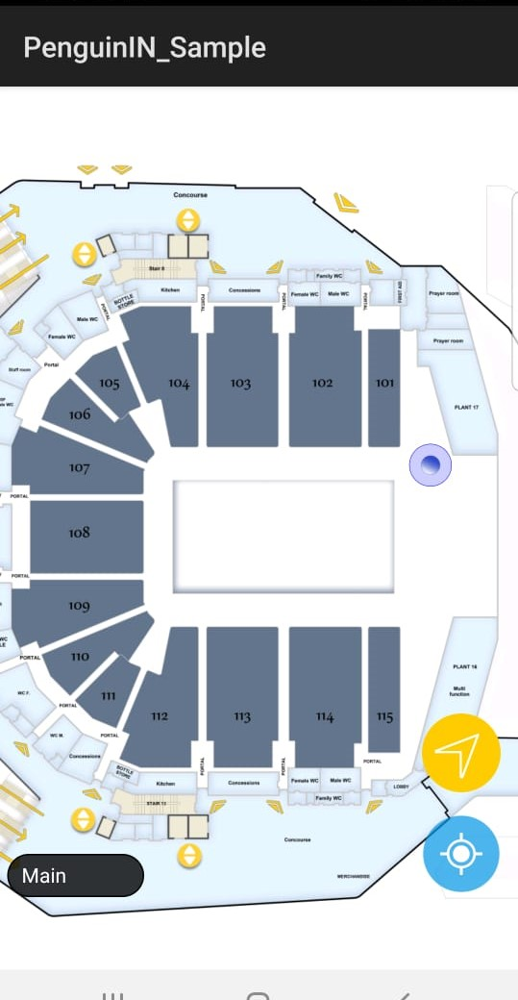
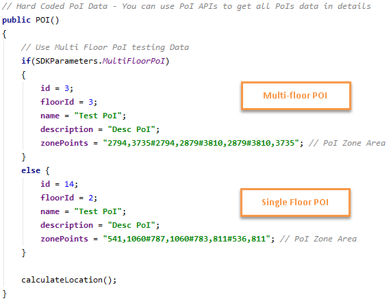
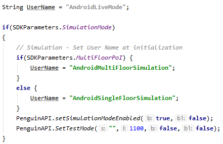
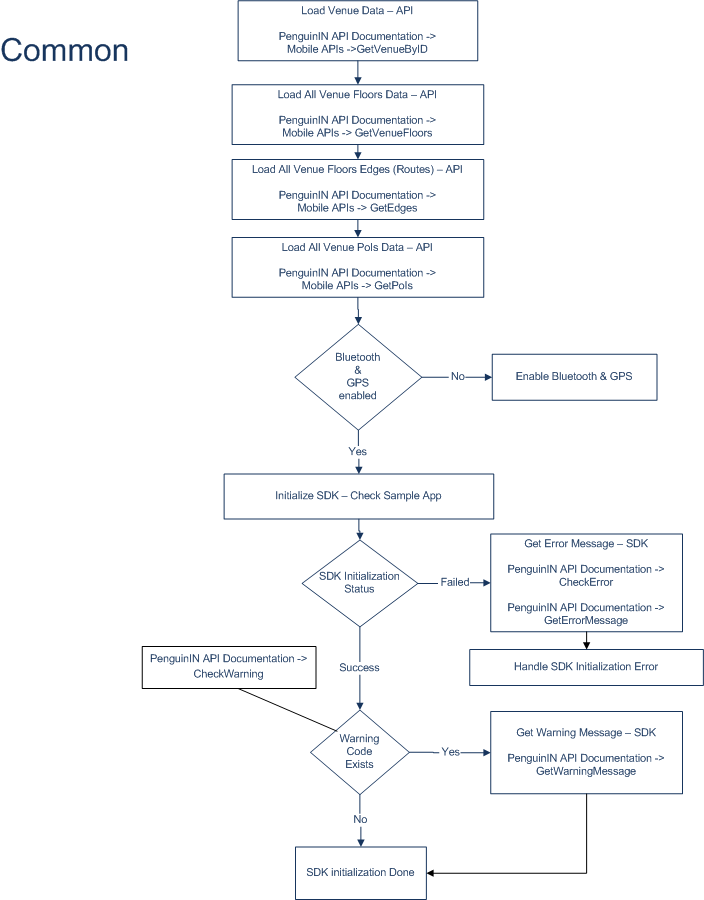
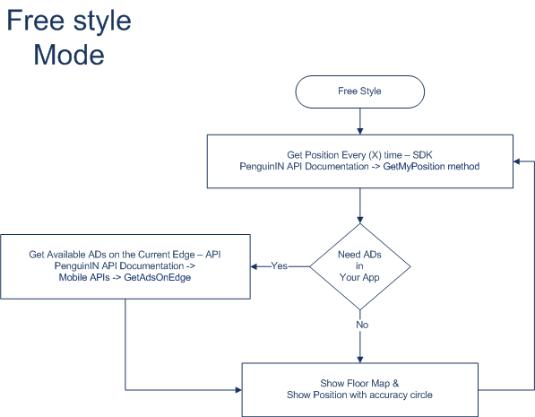

1 SDK and Sample Application Delivery
3 SDK and Sample App Configuration
At the bottom of this page, you will find a link to download the SDK as a .aar file and the sample application as a build-able source code to generate the required .apk file. This file can be integrated in Android Studio via Gradle file. Please note that the .aar file needs to be integrated into Lib (Library) folder, then in the project Build.gradle file. To Download the SDK and Sample app click here.
The sample application has two modes of operation: (1) simulation mode and (2) live mode. In simulation mode , the application runs a pre-configured scenario with predetermined list of positions. In live mode, the position is fetched from the position engine services and of course requires complete BLE beacon roll-out and site calibration data to have been completed. In both modes, connectivity to the position engine service and the presence of at least one BLE beacon is required.
The steps below explain how to run the sample application.
Install Sample App and Grant all permissions Manually:

Run the sample app, and then click on Load Data:
 

Make sure that the data is loaded to the SQLite tables.

After Loading data successfully, click on Login button.
After login, the map appears with the blue dot that shows the current
user location. This is blue dot is based on a simulated position.

A single hardcoded and highlighted POI has defined to demonstrate the
navigation example. Simply click on the highlighted POI zone on the
map and click on start navigation.
It is likely that during the development cycle, parameters for the SDK and the sample application will change. To change the SDK configuration from SDK folder open the com.penguinin_sampleUtil/SDKParameters, and you can start modifying the following parameters:
To change the PoI Data from Sample app folder open the com.penguinin_sampleData.Model.PoI\POI \Contructor, and you can start modifying the following paramters:
ID.
Floor ID.
Name.
Description
Zone Points.
Two different definitions for multi and single floor

To change the Username from Sample app folder open the o com.penguinin_sample\MainActivity\onCreate, and you can start modifying the following:
Username for live mode.
Username for simulation multi floor mode.
Username for simulation single floor mode.

In this section we present the methods availed to the application developer through our SDK followed by best practices to integrate it within a mobile application.
Returns initialization success or failure as Boolean value.
These steps describe the process of initialization:
| Parameters | Description | Value Type |
|---|---|---|
| UserID | Front End UserID | String |
| IPList |
Penguin Data API IP address (mandatory) Penguin Position API IP address (mandatory) Third party API IP address (optional) |
List(String) |
| context | App main context | Context |
| activity | App main activity | Activity |
| UseNoneIMU | Enable Just JAR None IMU calculation | Boolean |
| Value | Description | Value Type |
|---|---|---|
| Result |
Success: 1 or Fail: 0 Error Code. Warning Code. separated by “_” ex: “1_0_0” or “0_1_2” |
String |
Returns a Boolean value indication, that all needed requirements are ready
and you can start calling other methods.
N/A
| Value | Description | Value Type |
|---|---|---|
| Ready | Ready for calling other methods | Boolean |
Returns current error code if it exists.
N/A
| Value | Description | Value Type |
|---|---|---|
| ErrorCode | Current Error Code (0: No Errors) | Int |
Returns current warning code if it exists.
N/A
| Value | Description | Value Type |
|---|---|---|
| WarningCode | Current Warning Code (0: No Warnings) | Int |
Returns error message from Error Code Look Up table.
| Parameters | Description | Value Type |
|---|---|---|
| ID | Error Code | Int |
| Value | Description | Value Type |
|---|---|---|
| ErrorMessage | Error Message | String |
| Value | Description |
|---|---|
| 1 | OS not supported |
| 2 | Signal Lost |
| 3 | Venues details Import Error |
| 4 | Floors details Import Error |
| 5 | Settings Error |
| 6 | Map North angle calculation Error |
| 7 | Edges details Import Error |
| 8 | Wi-Fi Permission OFF |
| 9 | BLE Permission OFF |
| 10 | Device RF not available |
| 11 | Venue RF not available |
| 12 | Bluetooth not enabled |
| 13 | Sensors Initial Error |
| 14 | GPS Disabled |
Returns warning message from Warning Code Look Up table.
| Parameters | Description | Value Type |
|---|---|---|
| ID | Warning Code | Int |
| Value | Description | Value Type |
|---|---|---|
| WarningMessage | Warning Message | String |
| Value | Description |
|---|---|
| 1 | Accelerometer sensor not available |
| 2 | Magnetometer sensor not available |
| 3 | Magnetometer accuracy low |
| 4 | Gyro sensor not available |
| 5 | Orientation sensor not available |
| 6 | Barometer sensor not available |
Set the position mode and scanning time frequency:
| Parameters | Description | Value Type |
|---|---|---|
| ModeID | BackGround, FreeStyle, Navigation | Int |
| TimePeriod | Time Period in ms | Int |
| Value | Description | Value Type |
|---|---|---|
| Success | Updated the mode successfully | Boolean |
| ID | Description | Scan Time (milliseconds) |
|---|---|---|
| 1 | Background (Default) | 10000 |
| 2 | Free Style | 2000 |
| 3 | Navigation | 2000 |
Returns last detected position concatenated together with "_" separator:
Recommendation:
This method provides an update on the position of the mobile application
user. It is not recommended to call it with high frequency. The
recommended value is 500msec-2000msec and should be adjusted according to
the desired UI behavior.
N/A
| Value | Description | Value Type |
|---|---|---|
| Position |
FloorID, X, Y, Accuracy Circle Radius , Current Edge ID Concatenated together with "_" separator |
String |
Projects any point (X, Y) (i.e. chosen from the map or any other source)
onto the defined edges. Use of such point depends on the enabled mode:
background, freestyle, navigation.
| Parameters | Description | Value Type |
|---|---|---|
| MapPoint | Requested Point (X,Y) | Point |
| FloorID | Requested Floor ID | Int |
| Value | Description | Value Type |
|---|---|---|
| ProjectedPoint | The Projected MapPoint on Requested Floor Edges | Point |
Set current floor ID.
| Parameters | Description | Value Type |
|---|---|---|
| FloorID | Requested Floor ID | Int |
| Value | Description | Value Type |
|---|---|---|
| Success | New Floor ID saved successfully | Boolean |
Start positioning on the given navigation path.
| Parameters | Description | Value Type |
|---|---|---|
| PathEdges | Navigation path edges list | List(Edge) |
| Value | Description | Value Type |
|---|---|---|
| Success | Navigation mode enabled successfully | Boolean |
| Attribute | Type |
|---|---|
| id | Int |
| venueId | Int |
| floorId | Int |
| type | Int |
| p1VenueID | Int |
| p1FloorID | Int |
| p1 | Point |
| p2VenueID | Int |
| p2FloorID | Int |
| p2 | Point |
Stop navigation positioning and go back to freestyle mode positioning.
N/A
| Value | Description | Value Type |
|---|---|---|
| Success | Navigation mode disabled successfully | Boolean |
Set the test position mode and scanning time frequency.
| Parameters | Description | Value Type |
|---|---|---|
| FileName | Point’s Source text file name at Root destination | String |
| TimePeriod | Time Period in ms | Int |
| NoneIMU | Enable Just JAR None IMU calculation | Boolean |
| isFileSimulation | Use the Files as Simulation Points Source | Boolean |
| Value | Description | Value Type |
|---|---|---|
| Success | Updated the mode successfully | Boolean |
Set the test navigation position mode and scanning time
frequency.
| Parameters | Description | Value Type |
|---|---|---|
| FileName | Navigation Path ordered edges Source text file name at Root destination | String |
| PointsFileName | Point’s Source text file name at Root destination | String |
| TimePeriod | Time Period in ms | Int |
| NoneIMU | Enable Just JAR None IMU calculation | Boolean |
| Value | Description | Value Type |
|---|---|---|
| Navigation Edges List | File’s Edges list | List(Edge) |
| Attribute | Type |
|---|---|
| id | Int |
| venueId | Int |
| floorId | Int |
| type | Int |
| p1VenueID | Int |
| p1FloorID | Int |
| p1 | Point |
| p2VenueID | Int |
| p2FloorID | Int |
| p2 | Point |
Returns SDK’s current version number.
N/A
| Value | Description | Value Type |
|---|---|---|
| Version | Returns version’s number | String |
Sets data API service name.
| Parameters | Description | Value Type |
|---|---|---|
| ServiceName | - | String |
N/A
Sets position service name.
| Parameters | Description | Value Type |
|---|---|---|
| ServiceName | - | String |
N/A
Enables positioning dependency on steps.
| Parameters | Description | Value Type |
|---|---|---|
| isEnabled | - | Boolean |
N/A
Enables positioning simulation mode.
| Parameters | Description | Value Type |
|---|---|---|
| isEnabled | - | Boolean |
| isFileSimulation | Use the Files as Simulation Points Source | Boolean |
N/A
Sets positioning venue ID.
| Parameters | Description | Value Type |
|---|---|---|
| ID |
In case used value was “-1”; it will detect the venue where user is
located. Otherwise, if sent specific venue ID, it will get data for the sent venue ID. |
Int |
N/A
Returns SDK initialization progress status.
N/A
| Value | Description | Value Type |
|---|---|---|
| Status | - | Int |
| Value | Description |
|---|---|
| -1 | No Beacons found till now |
| 0 | Bluetooth & Sensors initialization |
| 1 | Venue Detection |
| 2 | Loading Venue Data (Floors & Edges) |
Returns SDK current navigation path (Venue, Floor, Edges, List, etc.).
N/A
| Value | Description | Value Type |
|---|---|---|
| Navigation Sub Path | SDK Current navigation Sub Path | NavigationSubPath |
| Value | Description | Value Type |
|---|---|---|
| SubPathsSize | Int | all navigation sub paths count |
| SubPathIndex | Int | Current index of all navigation sub paths list |
| VenueID | Int | Current Path Venue ID |
| FloorID | Int | Current Path Floor ID |
| FirstEdge | Edge | Current Path First Edge |
| NextEdge | Edge | Next Path Edge |
| NavigationPath | List(Edge) | Current Sub path List of Edges |
| Attribute | Type |
|---|---|
| id | Int |
| venueId | Int |
| floorId | Int |
| type | Int |
| p1VenueID | Int |
| p1FloorID | Int |
| p1 | Point |
| p2VenueID | Int |
| p2FloorID | Int |
| p2 | Point |
Returns navigation error path flag.
N/A
| Value | Description | Value Type |
|---|---|---|
| Error Path | - | Boolean |
Returns flag that your position floor is out of all navigation path.
N/A
| Value | Description | Value Type |
|---|---|---|
| Navigation Floor Error Flag | Current Floor is out of all navigation path | Boolean |
Enables or disables Wi-Fi positioning.
| Parameters | Description | Value Type |
|---|---|---|
| Enable | - | Boolean |
| Value | Description | Value Type |
|---|---|---|
| Success | - | Boolean |
Enables or disables BLE positioning.
| Parameters | Description | Value Type |
|---|---|---|
| Enable | - | Boolean |
| Value | Description | Value Type |
|---|---|---|
| Success | - | Boolean |
Returns Position Server Connectivity Status.
N/A
| Value | Description | Value Type |
|---|---|---|
| StatusCode | - | Int |
| Value | Description |
|---|---|
| 1 | Server Not Connected |
| 2 | Week or Poor Connection |
| 3 | Good Connection |
| 4 | Excellent Connection |
| 5 | Empty BLE Scan (Low BLE Coverage) |
Returns Floor Transition Status.
N/A
| Value | Description | Value Type |
|---|---|---|
| StatusCode | - | Int |
| Value | Description |
|---|---|
| 0 | No Transition – Same Floor |
| 1 | Transition Using Escalator – Moving Up |
| 2 | Transition Using Escalator – Moving Down |
| 3 | Transition Using Elevator – Moving Up |
| 4 | Transition Using Elevator – Moving Down |
Returns Position engine’s Floor Trusted Flag.
N/A
| Value | Description | Value Type |
|---|---|---|
| TrustedStatus | Ask User to select his current floor if not trusted | Boolean |
Returns error message that received from position engine.
N/A
| Value | Description | Value Type |
|---|---|---|
| PositionEngineMessageError | Same error message that received from position engine | String |
Returns flag that you must reset SDK to continue positioning.
N/A
| Value | Description | Value Type |
|---|---|---|
| resetSDKFlag | Positioning will stop if reset SDK flag is true. | Boolean |
The SDK Integration flow charts provided below help developers with the
SDK integration process. They show each step of the integration. The three
flow charts show the initialization, the free style and the navigation
mode.

